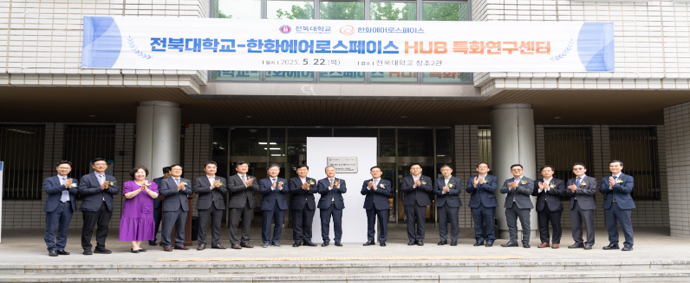
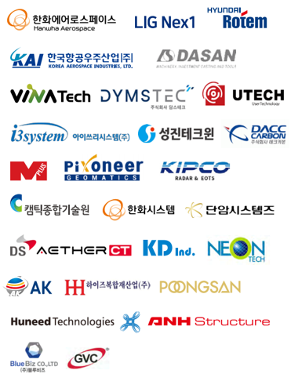
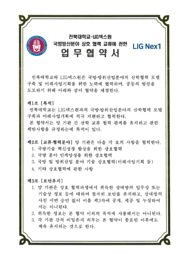
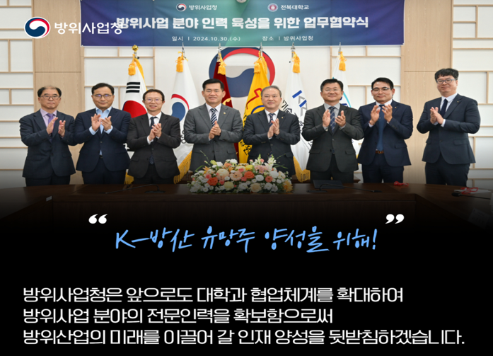
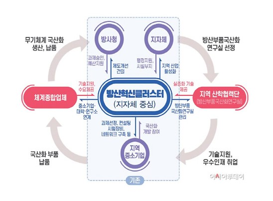
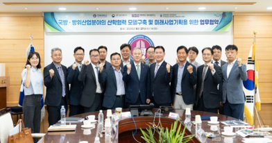

연구과제, 산학협력, MOU와 대외협력 성과를 총괄합니다.
연구성과국방산업연구소
전북대학교 국방산업연구소는 국방 분야와 첨단 기술의 융합을 기반으로
미래 방위산업 발전에 기여하기 위한 교육·연구 거점입니다.
연구소는 국방산업의 수요에 대응하는 실무형 인재를 양성하고,
지역 및 산업체와의 협력을 통해 국방 기술 경쟁력 강화에 이바지하는 것을 목표로 합니다.
교육·연구·산학협력
국방산업연구소를 중심으로 학부·대학원·주요 교육사업과 산학협력 정보를 연결하여 방위산업 전문인재 양성과 지역·기업 협력 활동을 소개합니다.
첨단 국방기술과 방위산업 정책·경영을 융합하는 학부 과정입니다.
학과 안내Master of Defense Acquisition 글로벌 온라인 석사과정입니다.
MDA 안내채용약정형 과정, 인턴십과 참여기업 정보를 연결합니다.
채용연계 안내지역 방산 생태계와 산학연 협력 기반을 조성합니다.
클러스터 안내산업 수요와 실무형 R&D 역량을 연결하는 대학원 과정입니다.
대학원 안내방산 도메인과 AI를 결합한 현장 중심 교육사업을 운영합니다.
부트캠프 안내방산 기획·조달·계약관리 전문역량을 강화하는 교육과정입니다.
교육과정 안내주요 협력 및 성과

전북대학교-한화에어로스페이스 HUB 특화연구센터 개소

업무협약 및 공동연구 참여 기업

업무협약서 내 교류협력분야

주요 방산기업 업무협약
방산 클러스터 및 정책

방산혁신클러스터 사업 유치전략 기획
